《Crafting Interpreters》读书笔记（第 11-30 章）
书接上文。
Chapter 11 - Resolving and Binding
- For Closure, when a function is declared, it captures a reference to the current environment. The function should capture a frozen snapshot of the environment as it existed at the moment the function was declared. In this way, we can match the rules of static scope - a variable usage always resolves to the same declaration, which can be determined just by looking at the text.
var a = "global";
{
fun showA() {
print a;
}
showA(); // Should be "global".
var a = "block";
showA(); // Should be "global" too.
}
- How to achieve?
- Immutable data structure: every time we declared a variable it could return a new environment that contained all of the previously declared variables along with the one new name (the Scheme way).
- Calculate how many “hops” away the declared variable will be in the environment chain.
- Semantic analysis: write a chunk of code that inspects the user’s program, finds every variable mentioned, and figures out which declaration each refers to. A parser tells only if a program is grammatically correct (a syntactic analysis), semantic analysis goes farther and starts to figure out what pieces of the program actually mean.
- This process could be done in separate passes.
- The type checker for statically typed language could be done based on AST generated by the parser here.
- The resolution information can be saved inside the syntax tree node itself direclty, or in a “side table”.
Chapter 12 - Classes
- Three broad paths to object-oriented programming: classes, prototypes, and multi-methods.
- Classes:
- Lifecycle:
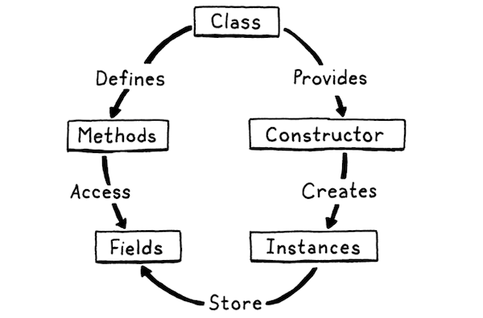
- Syntax grammar for “class declaration”:
declaration → classDecl
| funDecl
| varDecl
| statement ;
classDecl → "class" IDENTIFIER "{" function* "}" ;
- Syntax grammar for “get expressions”: after a primary expression, we allow a series of any mixture of parenthesized calls and dotted property accesses. That dot has the same precedence as the parentheses in a function call expression.
call → primary ( "(" arguments? ")" | "." IDENTIFIER )* ;
- Syntax grammar for “set expressions”:
assignment → ( call "." )? IDENTIFIER "=" assignment
| logic_or ;
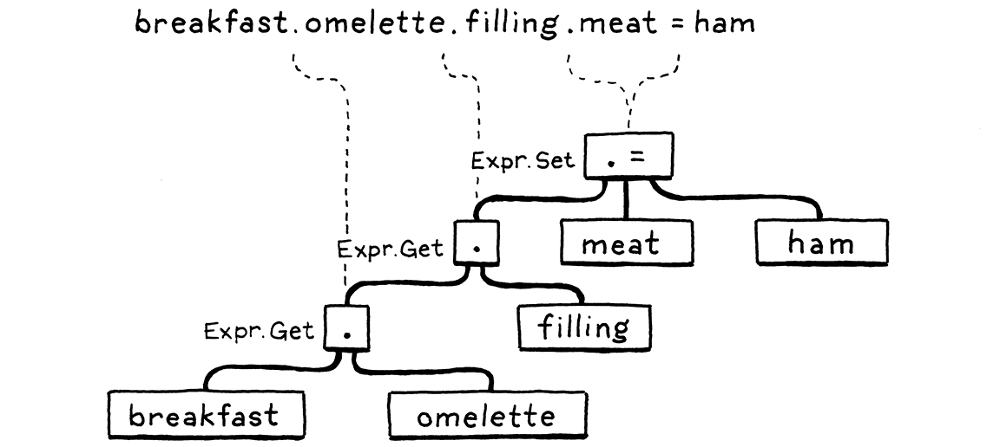
- “properties” V.S. “fields”: fields are named bits of state stored directly in an instance. Properties are the named things, that a get expression may return.
- Bound methods: have methods “bind”
thisto the original instance when the method is first grabbed (which is different from JavaScript). - “Constructing” an object is a pair of operations:
- The runtime allocates the memory required for a fresh instance.
- Then, a user-provided chunk of code is called which initializes the unformed object.
- Many of the optimizations invented to make dynamic languages fast rest on the observation that: even in those languages, most code is fairly static in terms of the types of objects it works with and their fields.
Chapter 13 - Inheritance
- Inheritance:
- Inheriting from another class means that everything that’s true of the superclass should be true of the subclass. In statically typed languages, the subclass must also be a subtype, and the memory layout is controlled so that you can pass an instance of a subclass to a function expecting a superclass and it can still access the inherited fields correctly.
- Syntax grammar:
classDecl → "class" IDENTIFIER ( "<" IDENTIFIER )?
"{" function* "}" ;
primary → "true" | "false" | "nil" | "this"
| NUMBER | STRING | IDENTIFIER | "(" expression ")"
| "super" "." IDENTIFIER ;
- With super, the subsequent “.” and property name are inseparable parts of the super expression, so it should be regarded as a token instead of a variable expression. A super call is a super access (getter) followed by a function call.
- For function calls on
super, the method lookup should start on the superclass of the class containing thesuperexpression.
Chapter 14 - Chunks of Bytecode
- The drawback of the “tree-walk” interpreter:
- Overhead is high due to the dynamic dispatch of each “visit method” (disallowed inlining and other static optimizations).
- Sprinkling data across the heap in a loosely connected web of objects does bad things for spatial locality.
- Not memory-efficient because of the way of AST nodes’ representation in memory (a simple expression “1 + 2” would need 7 nodes plus some necessary pointers between them).
- Interpreter V.S. Virtual Machine:
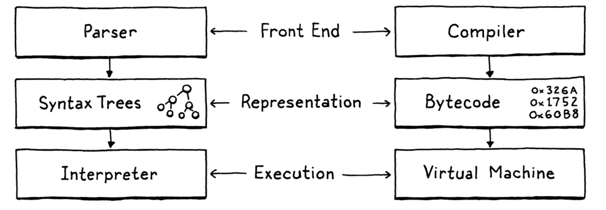
- Language test: each test is a program written in the language along with the output or errors it is expected to produce. Then you have a test runner that pushes the test program through your language implementation and validates that it does what it’s supposed to.
Chapter 15 - A Virtual Machine
- Storing “ip” in a local variable, which the C compiler could keep it in a register of efficient access speed.
- Efficient bytecode dispatch methods: “direct threaded code”, “jump table”, and “computed goto”.
- Register-based bytecode:
var a = 1;
var b = 2;
var c = a + b;
Above code would be compiled into:
add <a> <b> <c> // Read values from a and b, add, store in c.
- It still have a stack. Temporary values still get pushed onto it and popped when no longer needed. The main difference is that instructions can read their inputs from anywhere in the stack and can store their outputs into specific stack slots.
- Decoding is more complex because of the additional operands, but no pushing and popping or other stack manipulation by looping the instructions.
Chapter 16 - Scanning on Demand
- Trie (digital tree, prefix tree): it’s used for locating specific keys from within a set.
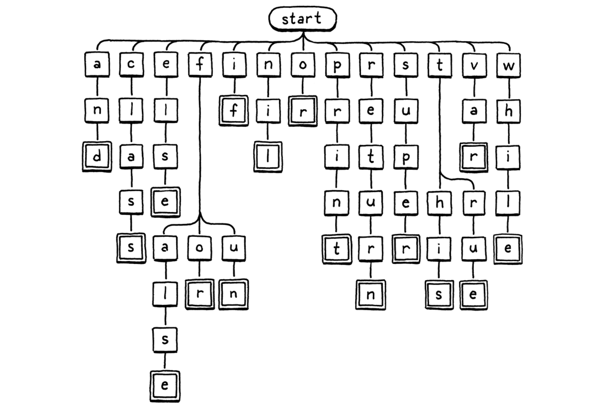
- Each string the trie “contains” is represented as a path through the tree of character nodes.
- It’s a special case of deterministic finite automaton (DFA).
- It would be more efficient for identifying identifiers than using a hash map (to look up a string in a hash table, it needs to walk the string to calculate its hash code, find the corresponding bucket in the hash table, and then do a character-by-character equality comparison on any string it happens to find there).
- Contextual keywords: these are identifiers that act like reserved words in some contexts but can be normal user-defined identifiers in others.
Chapter 17 - Compiling Expressions
- Vaughan Pratt’s “top-down operator precedence parsing”:
- Driven by the function table, columns are:
- The function to compile a prefix expression starting with a token of that type.
- The function to compile an infix expression whose left operand is followed by a token of that type.
- The precedence of an infix expression that uses that token as an operator.
- Each parsing function only parses exactly one type of expression, they don’t cascade to include higher-precedence expression types like recursive descent parser.
- Single-pass compilation: a compiler has roughly two jobs. It parses the user’s source code to understand what it means. Then it takes that knowledge and outputs low-level instructions that produce the same semantics. Many languages split those two roles into two separate passes in the implementation. A parser produces an AST and then a code generator traverses the AST and outputs target code. For single-pass compilation, these processes will be merged, this way only works for the language that must be designed such that you don’t need much surrounding context to understand a piece of syntax.
Chapter 18 - Types of Values
- Is a <= b always the same as !(a > b)? According to IEEE 754, all comparison operators return false when an operand is NaN. That means NaN <= 1 is false and NaN > 1 is also false.
Chapter 19 - Strings
- Heap-allocated types: strings, instances, functions.
- Type punning: it refers to any programming techniques that subvert or circumvent the type system of a programming language in order to achieve an effect that would be difficult or impossible to achieve within the bounds of the formal language.
- The data structure representation could be achieved by type punning in C or inheritance in C++.
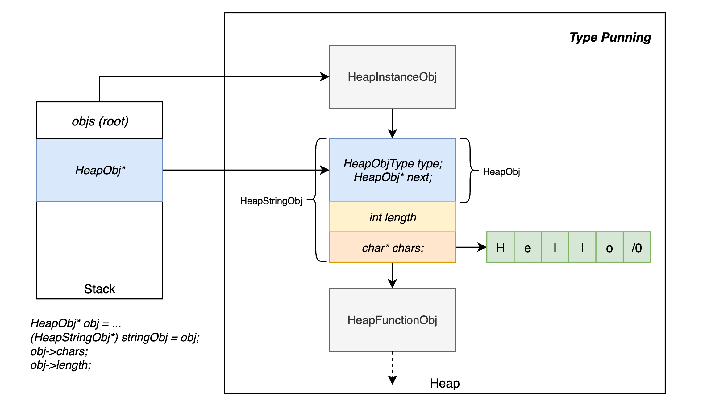
Chapter 20 - Hash Tables
- Birthday paradox: it refers to the counterintuitive fact that only 23 people are needed for the probability of having at least two share a birthday to exceed 50%. So, as the number of entries in the hash table increases, the chance of collision increases very quickly.
- Collision resolution:
- Separate chaining: each bucket contains a colection of entries. In the classic implementation, each bucket points to a linked list of entries. To look up an entry, finding its bucket and then walk the list until finding an entry with the matching key. This way has a lot of overhead from pointers and tends to scatter little linked list nodes around in memory which isn’t great for cache usage.
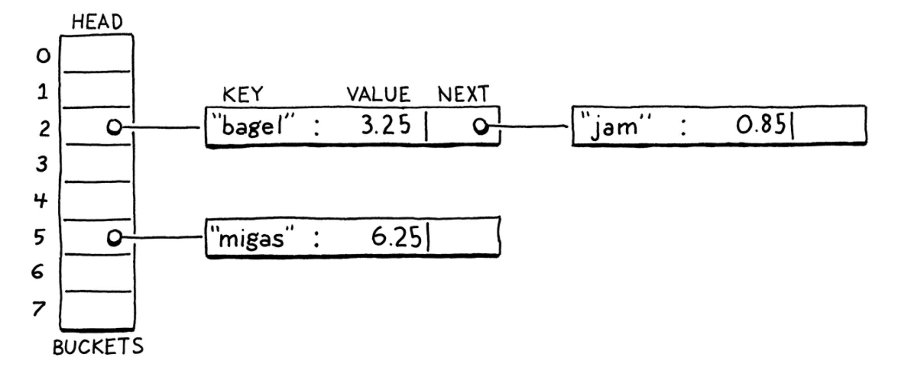
- Open addressing (closed hashing): all entries live directly in the bucket array, with one entry per bucket. If two entries collide in the same bucket, finding a different empty bucket to use instead (by certain probing algorithms).
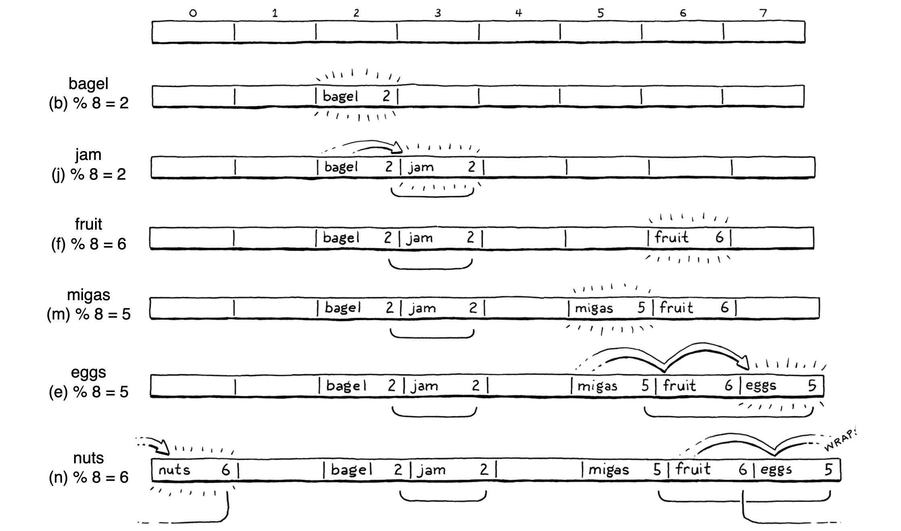
- Hash functions: it takes some larger blob of data and “hashes” it to produce a fixed-size integer hash code whose value depends on all of the bits of the original data. A good hash function has three main goals:
- It must be deterministic.
- It must be uniform.
- It must be fast.
- Hash Tables: an array of entries.
- Load factor: the number of entries (the buckets that have already been occupied) / the number of buckets. The higher the load factor, the greater the chance of collisions.
- Keeping the hash of the string along with the string content for efficient looking up in the hash table.
- FNV-1a hashing algorithm:
static uint32_t hashString(const char* key, int length) {
uint32_t hash = 2166136261u;
for (int i = 0; i < length; i++) {
hash ^= (uint8_t)key[i];
hash *= 16777619;
}
return hash;
}
- Tombstones: instead of clearing the entry on deletion, we replace it with a special sentinel entry called a “tombstone”. When we are following a probe sequence during a lookup, and we hit a tombstone, we don’t treat it like an empty slot and stop iterating. Instead, we keep going so that deleting an entry doesn’t break any implicit collision chains and we can still find entries after it.
- String interning: a process of deduplication. We create a collection of “interned” strings. Any string in that collection is guaranteed to be textually distinct from all others. When you intern a string, you look for a matching string in the collection. If found, you use that original one. Otherwise, the string you have is unique, so you add it to the collection.
Chapter 21 - Global Variables
- Stack effect: every bytecode instruction has a stack effect that describes how the instruction modifies the stack. For example, OP_ADD pops two values and pushes one, leaving the stack one element smaller than before, the stack effect is “-1”. And the stack effects for any complete expression would be one. And The bytecode for an entire statement has a total stack effect of zero.
- Global variables are late bound in some language implementations. “Late” in this context means “resolved after compile time”. That’s good for keeping the compiler simple, but not great for performance.
Chapter 22 - Local Variables
- Leveraging stack to hold local variables:
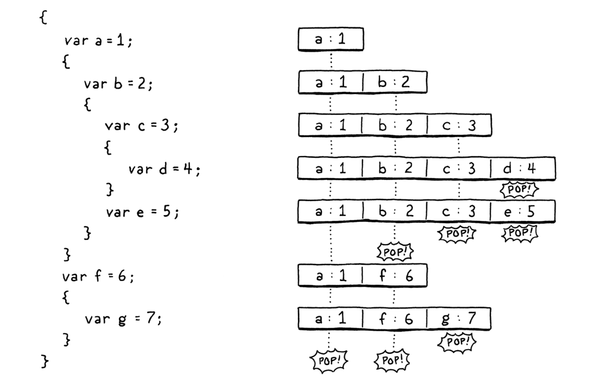
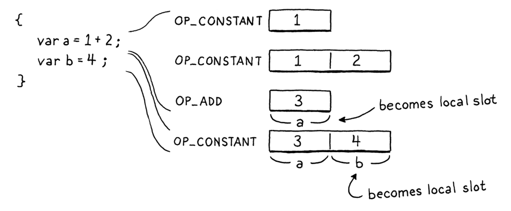
Chapter 23 - Jumping Back and Forth
- Backpatching: emitting the jump instruction first with a placeholder offset operand, and keeping track of where that half-finished instruction is. Next, compile the subsquent statements (like “then”). Once it’s done, we know how far to jump, and replace that placeholder offset with the real one now that we can calculate it.
- “if” statement:
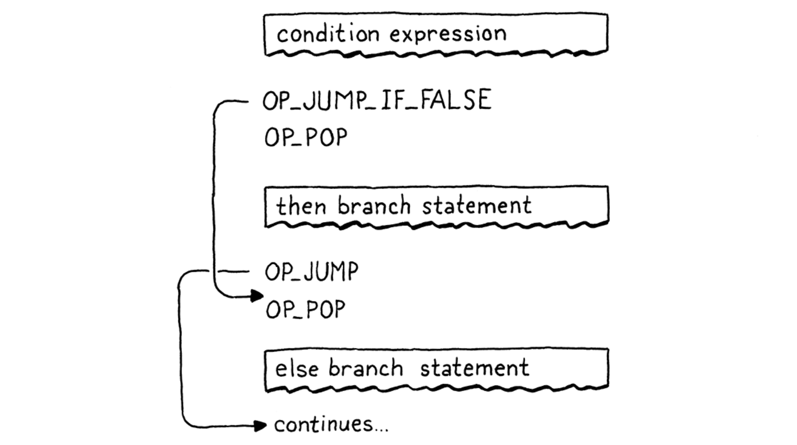
- All the jump instructions have an operand of the relative “offset” that will be jumped over.
- The condition expression value left on the stack should be cleaned in each branch.
- Logical “and” operators:
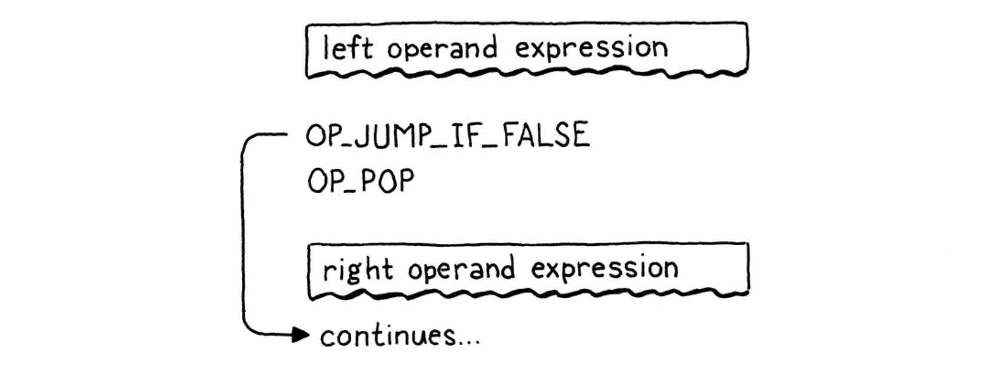
- Logical “or” operators:
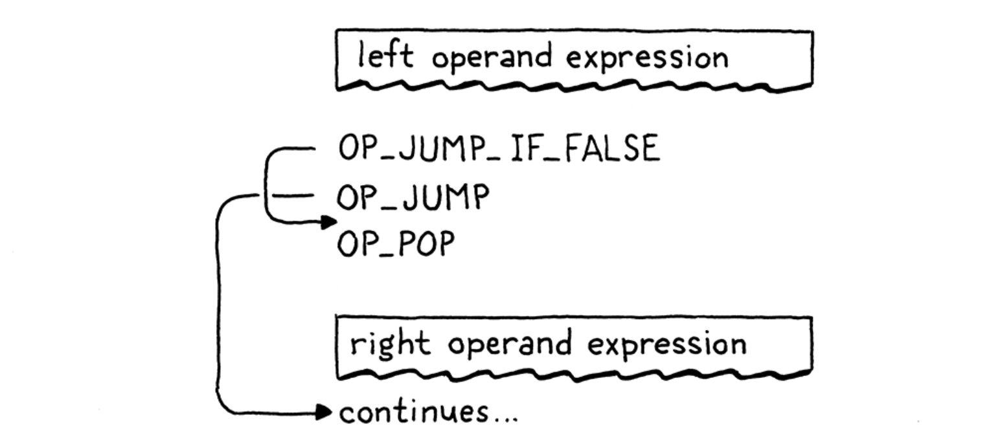
- “while” statement:
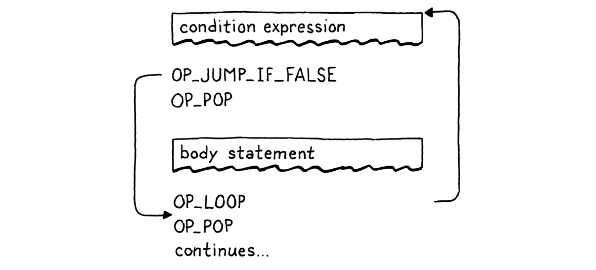
- “for” statement:
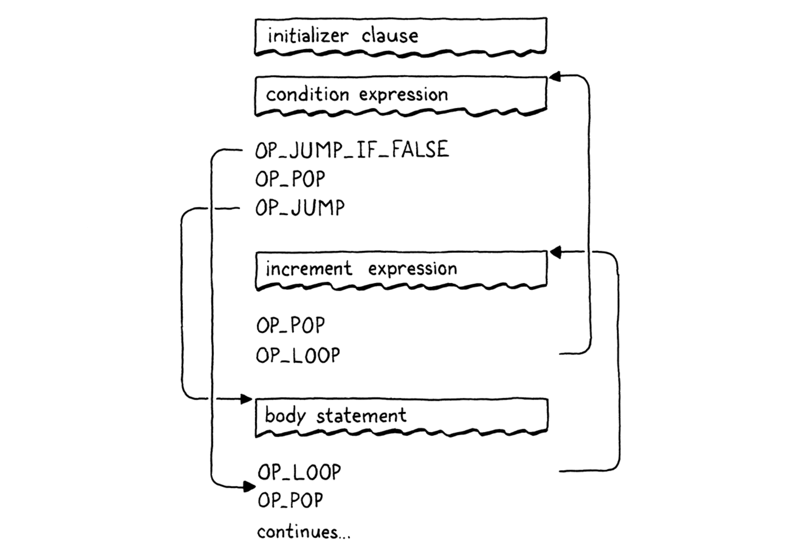
- Any control flow using “goto” can be transformed into one using just sequencing, loops, and branches.
Chapter 24 - Calls and Functions
- A function object is the runtime representation of a function, but we create it at compile time. The way to think of it is that a function is similar to a string or number literal. It forms a bridge between the compile time and runtime worlds. When we get to function declarations, those really are literals:they are a notation that produces values of a built-in type. So the compiler creates function objects during compilation. Then, at runtime, they are simply invoked.
Chapter 25 - Closures
- Closures capture variables not only values.
Chapter 26 - Garbage Collection
- Reachability:
- All roots are reachable.
- Roots: a root is any object that the VM can reach directly without going through a reference in some other object.
- Any object referred to from a reachable object is itself reachable.
- Simple “tricolor abstraction” GC algorithm:
- White: at the beginning of a garbage collection, every object is white. This color means we have not reached or processed the object at all
- Gray: during marking, when we first reach an object, we darken it gray. This color means we know the object itself is reachable and should not be collected. But we have not yet traced through it to see what other objects it references. In graph algorithm terms, this is the “worklist” — the set of objects we know about but haven’t processed yet.
- Black: when we take a gray object and mark all of the objects it references, we then turn the gray object black. This color means the mark phase is done processing that object.
- Weak reference: the string table is special and we need special support for it. In particular, it needs a special kind of reference. The table should be able to refer to a string, but that link should not be considered a root when determining reachability. That implies that the referenced object can be freed. When that happens, the dangling reference must be fixed too, sort of like a magic, self-clearing pointer.
- Performance goal: maximizing throughput and minimizing latency.
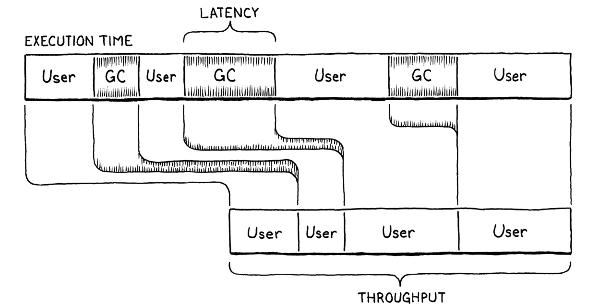
- Throughput: is the total fraction of time spent running user code versus doing garbage collection work. Say you run a clox program for ten seconds and it spends a second of that inside collectGarbage(). That means the throughput is 90%—it spent 90% of the time running the program and 10% on GC overhead.
- Latency: is the longest continuous chunk of time where the user’s program is completely paused while garbage collection happens. It’s a measure of how “chunky” the collector is. Latency is an entirely different metric than throughput.
- Generational hypothesis: most objects are very short-lived but once they survive beyond a certain age, they tend to stick around quite a long time. The longer an object has lived, the longer it likely will continue to live.
Chapter 27 - Classes and Instances
(Ignored)
Chapter 28 - Methods and Initializers
- Typical pattern of optimization:
- Recognize a common operation or sequence of operations that is performance critical. In this case, it is a method access followed by a call.
- Add an optimized implementation of that pattern.
- Guard the optimized code with some conditional logic that validates that the pattern actually applies. If it does, stay on the fast path. Otherwise, fall back to a slower but more robust unoptimized behavior. Here, that means checking that we are actually calling a method and not accessing a field.
Chapter 29 - Superclasses
(Ignored)
Chapter 30 - Optimization
- Profiler: a tool that runs your program and tracks hardware resource use as the code executes. Simple ones show you how much time was spent in each function in your program. Sophisticated ones log data cache misses, instruction cache misses, branch mispredictions, memory allocations, and all sorts of other metrics.
- Division and modulo are about 30-50 times slower than addition and subtraction on x86.
- Achieve modulo with bit masking (if the number is a factor of two): you can calculate a number modulo any power of two by simply AND-ing it with that power of two minus one.
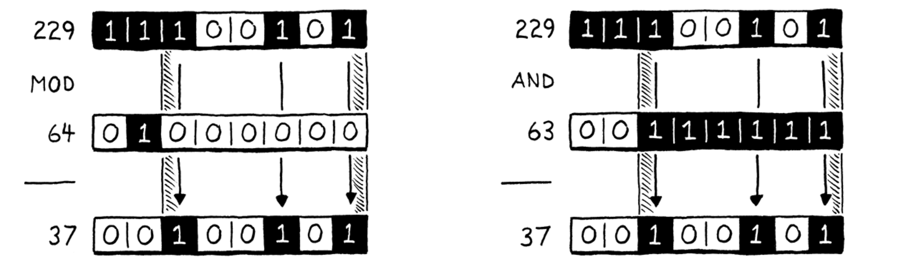
- NaN tagging: kind of way to represent values with IEEE-754 format.
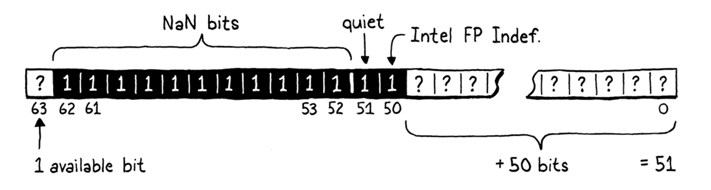
- Most widely used chips today only ever use the low 48 bits for pointers. The remaining 16 bits are either unspecified or always zero.